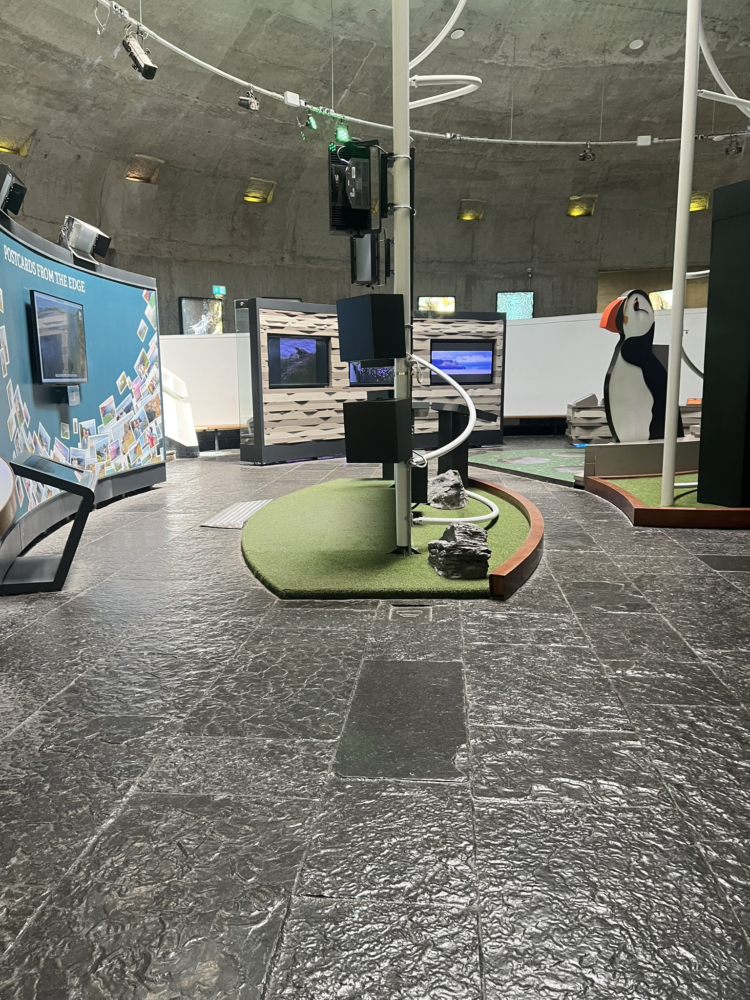
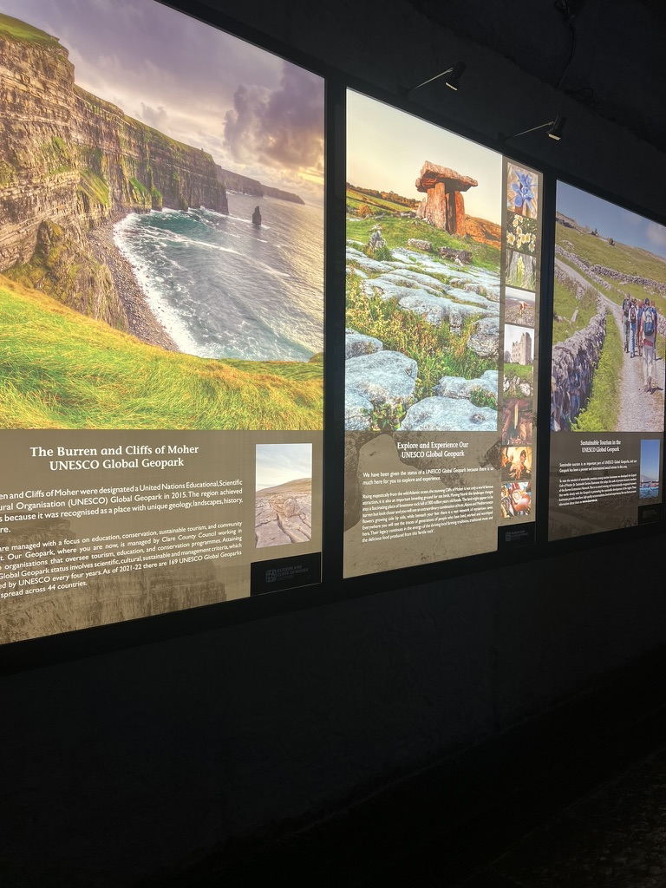
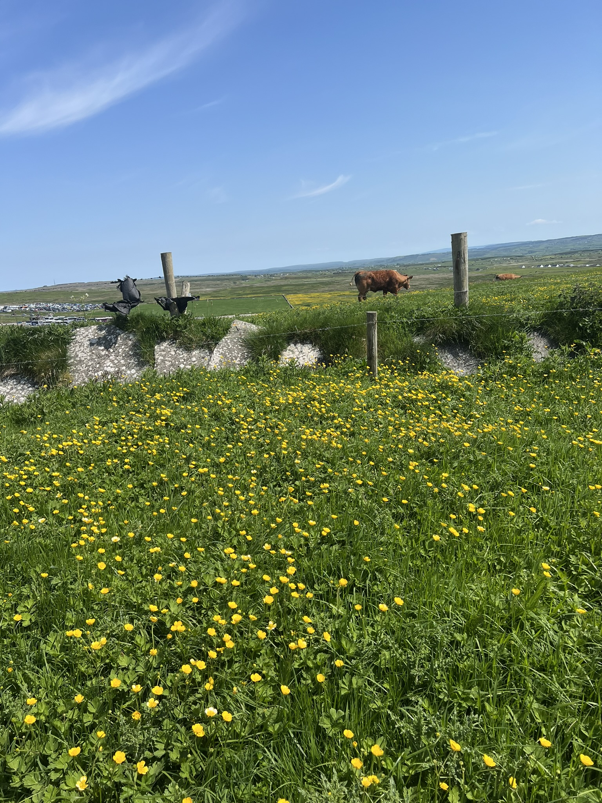
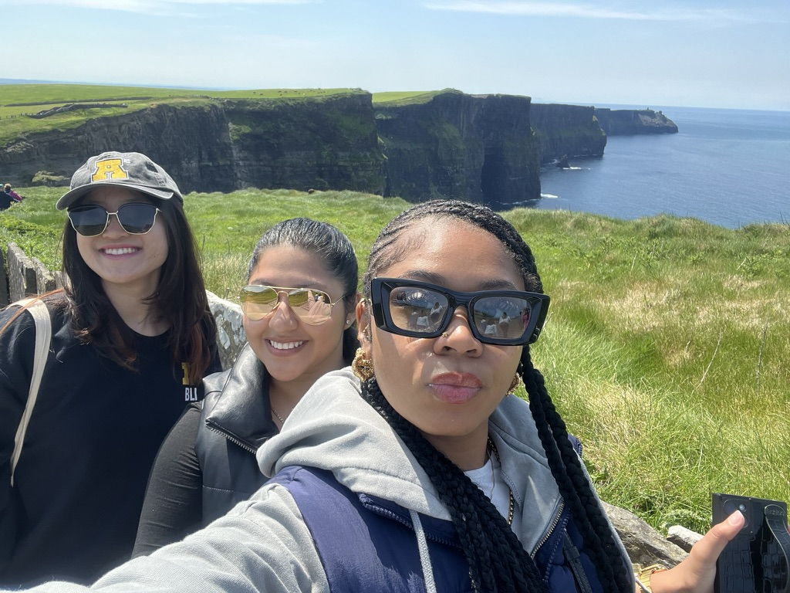

Inside views of the exhibition.Views of the castle

Pictures of the indoor exhabits.

Cows around the walk.

A selfie with a friend.The views from Cliffs of Moher Other sides Views of Cliff of Moher
Cliffs of Moher
Scenic Views
These cliffs are famous for appearing in multiple movie sets, including "Harry Potter & The Half-Blood Prince." They are also home to puffins, making them a great place to visit to experience the beauty of Ireland. There is also an inside
Places to Eat
Dining at the Cliffs, there are great food options available in the Visitor Centre at the Cliffs of Moher Experience. On the ground floor is the Puffin’s Nest Café, while the Cliffs View Café is located on the first floor. It's a delicious place to try while still enjoying the view..